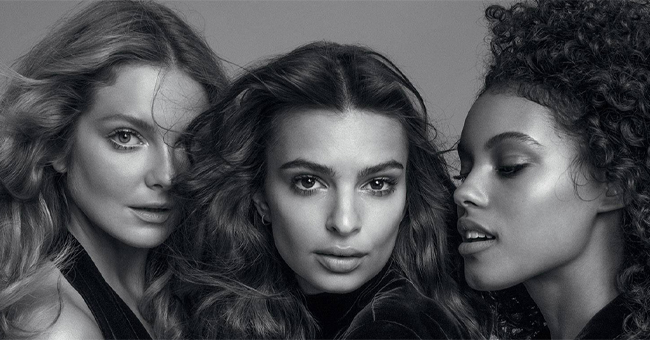

Commitments &
Responsibilitie
Doing everything in our power to be exemplary
- FOR OUR PLANET
- FOR OUR PEOPLE
- FOR OUR PRODUCT
FOR OUR PLANET
L’Oréal for the Future, our sustainability commitments for 2030
| Fighting Climate Change | For more than 20 years, we have worked to reduce the CO2 emissions linked to our industrial activity. To achieve this, we improved energy efficiency across all our facilities (buildings, equipment, etc.), increased the use of local renewable energy wherever possible and achieved the targets defined for the sites without carbon offsetting projects. |
|---|---|
| Managing Water Sustainably | At L’Oréal, water, as an essential component in creating and using our products, is central to our business. Our ability to operate effectively and meet all the needs of our consumers depends on sustainable water access, management and conservation. |
| Respecting Biodiversity | Preserving the beauty of the planet also means preserving its biodiversity. Natural ecosystems have been damaged, with major consequences for lands and communities across the world, including in terms of their resilience to climate change. We are committed to protecting and preserving biodiversity, a unique bounty.. |
| Preserving Natural Resources | At L’Oréal, we manage our consumption of natural resources to ensure that our activities are compatible with a resource-constrained planet. We promote the use of renewable raw materials that are sustainably sourced or derived from green chemistry. We are also working on solutions that allow for more recycling and promote the development of the circular economy. |
Our Brands are our Titles of Nobility